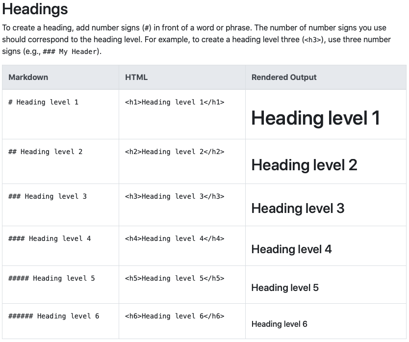

A course in quantitative research workflow for students in the higher education administration program at the University of Florida
In addition to using R in this course, you will also learn to use Markdown, a plain text markup language created by John Gruber in 2004. If you’re thinking, no, not another language — rest assured that Markdown is very easy to learn and use. In fact, it’s possible you’ve already used Markdown (or a version of it) if you’ve ever used Slack or a lightweight writing tool like iAWriter.
Most people who do any writing on a computer are familiar with MS Word. Even people who don’t use MS Word likely write with a MS Word-like program. Since we’re all on the same page, why introduce a new way to write — why Markdown?
The primary reason to bother is that Markdown files are easier to share and better support replicability in a quantitative research workflow. Understanding why this it the case requires first understanding the difference in how each of these writing tools handles a document’s content and formatting.
WYSIWYG (pronounced how you might guess - “whizzy-whig”) stands for what you see is what you get. MS Word and similar programs are WYSIWYG writing tools. Want some text bolded? You highlight the text, click on the bold text button (or hit Control/Command-B) and the text becomes bold. Want 1.05” margins to increase the page count (teachers always know, by the way…), then you adjust the margins and watch the text squeeze a little and the page count increase.
The point is that as you write, you control the content and how it’s formatted at the same time. This is really powerful. You can see your document (literally) taking shape and when you’re done writing, you’re mostly done formatting, too.
But one problem from a research perspective is that WYSIWYG document
preparation programs don’t always share well, meaning that the
formatting isn’t always preserved across computers or operating
systems. Sometimes equations don’t open correctly; the font you
selected doesn’t exist on another computer. While programs may be able
to open each other’s files (e.g. OpenOffice can open a .docx
file), that’s not always the case. They open different-program files
with many errors or even not at all.
The second problem is they don’t work well with reproducible workflows. Let’s say you’ve done some data analysis and make 10 tables and 10 figures. You’ve carefully placed and formatted in your MS Word report. Perfect! But before giving to your supervisor or submitting to a journal, you get some new data and need to rerun everything…ah! You’ll have to go through the whole transfer and formatting process again, increasing the likelihood of introducing errors.
WYSIWIM (“whizzy-whim”), on the other hand, separates formatting from content. Rather than making bold text bold, you instead add a bit of markup — some special syntax — to the text you want to be bold. Only when the document is finally compiled into the final form will the text be bold.
Markdown syntax uses plain text characters to indicate formatting. This lesson was written in Markdown, so to show you an example, here’s the prior paragraph, in plain Markdown syntax:
_WYSIWIM_ ("whizzy-whim"), on the other hand, separates formatting
from content. Rather than making bold text bold, you instead add a bit
of markup --- some special syntax --- to the text you want to be
bold. Only when the document is finally _compiled_ into the final
form will the **text be bold**.
Markdown solves the two problems noted above. First, it’s written in plain text, which means that it can be opened on any computer running any operating system. Even if the end user doesn’t have a way to compile the raw Markdown syntax into the nice-looking final form, the text is still very legible. In fact, this feature — ability to read uncompiled — was a motivating force behind the development of Markdown:
The idea is that a Markdown-formatted document should be publishable as-is, as plain text, without looking like it’s been marked up with tags or formatting instructions. (John Gruber, Markdown website)
Second, because it’s plain text, it integrates well with scripting languages like R. Remember our example from before? If your final report was in Markdown instead of MS Word, you could rerun your analyses with the updated data and then recompile your final report — tables and figures updated automatically!
In fact, R and Markdown work so well together that you can combine them in a single — appropriately named — RMarkdown document that takes a combined file ending:
analysis.Rwrite_up.mdreport.Rmdor
analysis.R + write_up.md = report.Rmd
We’ll keep our R and Markdown scripts separate at first, but know that you’ll submit an RMarkdown file for your final project.
Rather than list Markdown syntax here, I’ll direct you to an excellent resource: The Markdown Guide. On this site, you find example of both basic syntax (headers, italics, bold, links) and more advanced syntax (tables and footnotes).
Here’s an example from the Markdown Guide basic syntax page for making headers:

On the left you have the Markdown syntax. To make a header, just put a
pound sign / hash (#) in front of the line. As you want smaller
headers, just keep adding pound signs. The middle column shows you the
underlying HTML (web markup
language) code. This isn’t that
important for us. The last column, however, shows the text as it will
render in your final document.
The site is also nice in that it shows you a few different ways, when they exist, of doing the same thing. Take some time to go through the site — it won’t take long — and keep it in mind as a reference for the future.